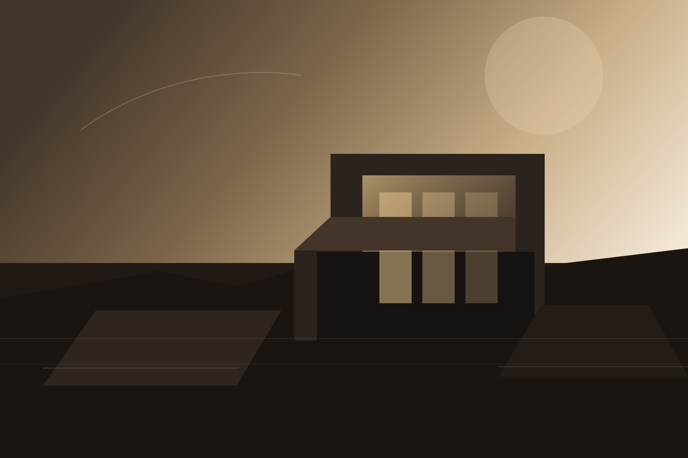
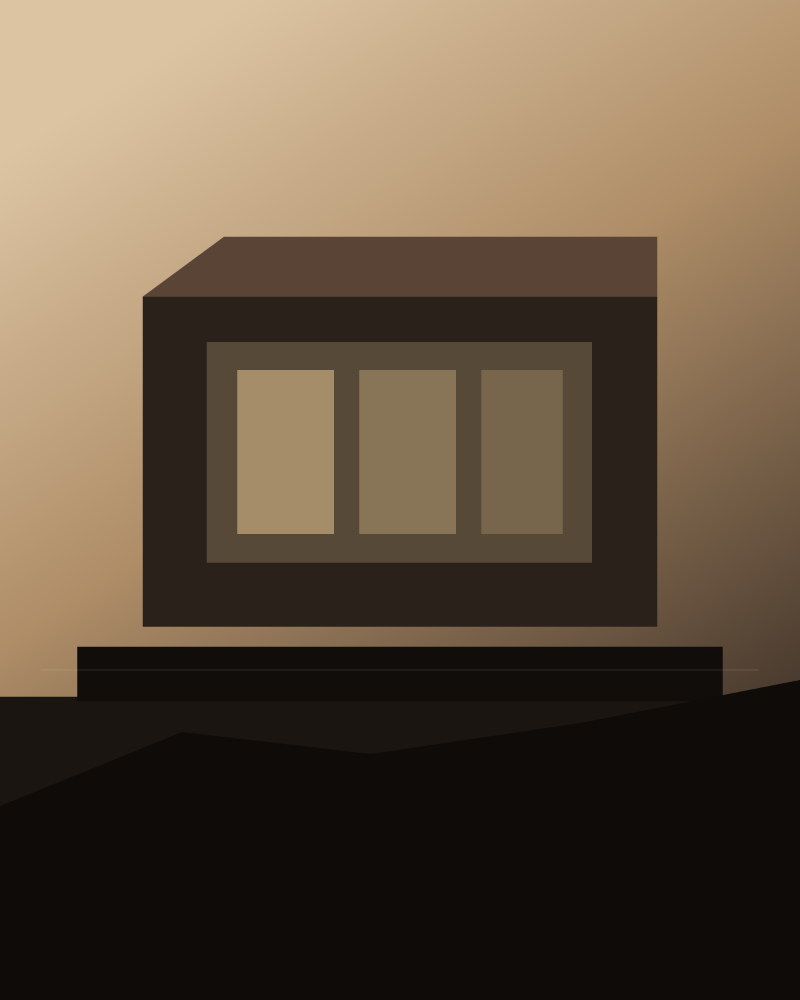
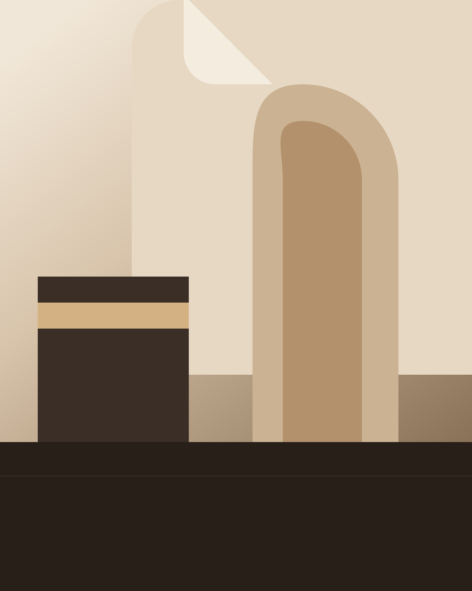

La base ya apunta a Ciudad de Guatemala para apoyar posicionamiento orgánico inicial.

Ciudad de Guatemala · Arquitectura premium
Arquitectura contemporánea para vivir mejor en Ciudad de Guatemala.
Diseñamos residencias, interiores y remodelaciones con una mirada cálida, precisa y atemporal, acompañando cada proyecto desde el concepto hasta la obra.
- Atención personalizada en Ciudad de Guatemala
- Diseño residencial e interiorismo de alto detalle
- Proceso claro desde el brief hasta la entrega
Enfoque
Un estudio pensado para transformar espacios con calma, detalle y dirección clara.
HTML limpio, CSS separado, JavaScript mínimo e imágenes ligeras listas para GitHub Pages.
WhatsApp real conectado en hero, navegación y cierre final para captar consultas rápido.
Servicios
Servicios para clientes que buscan diseño bien resuelto, ejecución cuidada y acompañamiento real.
La oferta quedó aterrizada para una primera versión comercial en Guatemala, con servicios claros y fáciles de entender desde el primer scroll.
Arquitectura residencial
Casas nuevas, ampliaciones y redistribuciones con visión integral, técnica y estética.
Interiorismo integral
Materialidad, iluminación, carpintería y mobiliario para espacios cálidos y coherentes.
Remodelación premium
Actualización de viviendas y espacios comerciales para mejorar valor, uso y presencia.
Supervisión de obra
Seguimiento puntual para cuidar que el proyecto se construya con coherencia y detalle.
Portafolio base
Una selección base para comunicar el lenguaje visual del estudio mientras llega el portafolio definitivo.

Residencial
Residencia contemporánea con materialidad cálida
Diseño arquitectónico · Materialidad cálida
Interiorismo
Interior social con luz, textura y calma visual
Interiorismo · Curaduría materialEstudio
Proceso consultivo y acompañamiento cercano
Briefing · Concepto · SeguimientoProceso
Una ruta clara para pasar de la consulta inicial a un proyecto bien dirigido.
-
01 · Primera conversación
Definimos objetivos, presupuesto, tiempos y el tipo de espacio que quieres transformar.
-
02 · Concepto y estrategia
Ordenamos la propuesta con layout, referencias, materialidad y prioridades de inversión.
-
03 · Desarrollo del proyecto
Convertimos la idea en planos, criterios técnicos y decisiones listas para ejecución.
-
04 · Obra y seguimiento
Acompañamos la implementación para proteger la calidad del resultado final.
Contacto
Conversemos sobre tu proyecto en Ciudad de Guatemala.
Ya dejamos conectada una primera versión comercial de Venetian Studio. El siguiente paso natural es sumar portafolio real, testimonios y fotografías definitivas.
Abrir WhatsApp
Respuesta directa por WhatsApp para consultas iniciales, reuniones y propuestas.
Llamar al +502 4493 1433